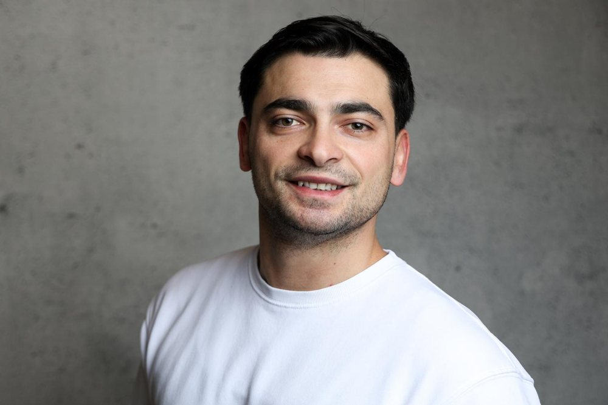

Vom Tiefbauer zum eigenen Betrieb
Jede Station auf der Baustelle selbst gemacht
Enes Kofrc hat 2019 bei Cableway in München als Tiefbauer angefangen und selbst mitgegraben: Baugruben und Kabelgräben ausheben, Leerrohre verlegen, Hausanschlüsse herstellen und die Oberfläche wieder schließen. Wer das von Grund auf gelernt hat, weiß, was auf der Baustelle gebraucht wird und wie lange etwas wirklich dauert.
Bei Solutions 30 übernahm er als Vorarbeiter und Kolonnenführer Verantwortung für eigene Teams. Er führte Kolonnen bei Hausanschlüssen im Netz von Kabel Deutschland und Vodafone, las Lage- und Netzpläne, beriet Kunden vor Ort und unterstützte Partnerfirmen bei Störungen und Kabelschäden.
2023 wechselte er als Bauleiter zu Circet nach Hamburg. Dort betreute er Bauleiter und Subunternehmer im Glasfaserausbau, nahm Bauvorhaben ab, prüfte Aufmaße und Rechnungen und erstellte Angebote und Nachkalkulationen. Ab 2025 leitete er als Teamleiter Bauprojekte im Netzausbau und führte dabei Bauleiter, Obermonteure und Monteure.
Im Februar 2026 folgte der Schritt in die Selbstständigkeit. Als Subunternehmer für Circet Deutschland führt Kosaco heute Arbeiten im Vodafone-Netz aus, von Hausanschlüssen über Störungsbeseitigung bis zum Trassenbau. Allein in diesem Jahr waren es bereits über 100 Baustellen, Tendenz steigend.
Diese Erfahrung bringen wir jetzt auch zu Privat- und Gewerbekunden: in den Garten, auf die Einfahrt und in den Keller. Gewerke, die einem eingetragenen Fachbetrieb vorbehalten sind, geben wir an qualifizierte Partnerbetriebe und behalten Koordination, Bauleitung und Abnahme selbst in der Hand. Sie haben dabei immer einen festen Ansprechpartner.

- Tiefbauer bei Cableway, MünchenEinstieg im Tiefbau: Baugruben, Kabelgräben und Hausanschlüsse, später als Kolonnenführer.
- Vorarbeiter und Kolonnenführer bei Solutions 30, BayernFührung einer Kolonne bei Hausanschlüssen im Netz von Kabel Deutschland und Vodafone, Planlesen und Dokumentation.
- Bauleiter FTTH bei Circet, HamburgBauleitung im Glasfaserausbau: Betreuung von Subunternehmern, Bauabnahmen, Aufmaß und Rechnungskontrolle.
- Teamleiter NE3 bei Circet, Stuttgart und FrankfurtGesamtverantwortung für Bauprojekte im Netzausbau, Führung von Bauleitern, Obermonteuren und Monteuren.
- Gründung von KosacoSubunternehmer für Circet im Vodafone-Netz. Über 100 Baustellen im ersten Jahr.
Drei Dinge, auf die Sie sich verlassen können
Qualität
Fachgerechte Ausführung nach den Vorgaben der Netzbetreiber, vom Leitungsgraben bis zur wiederhergestellten Oberfläche.
Zuverlässigkeit
Termine werden gehalten. Wenn sich etwas ändert, erfahren Sie es von uns zuerst.
Erfahrung
Seit 2019 im Tiefbau, vom Graben über die Bauleitung bis zur Teamführung.